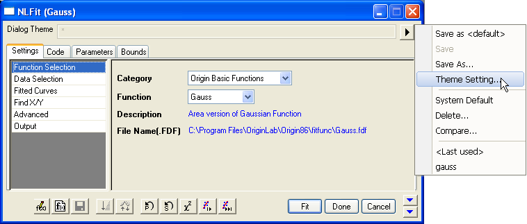
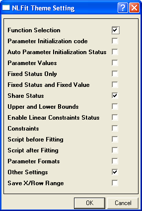

Anpassen mit Designs
Designeinstellung
Mit dem Dialogfeld Einstellungen NLFit Design können Sie angeben, was in dem Design gespeichert werden soll. Es kann wie in dem Bild unten gezeigt geöffnet werden:
- 
- Klicken Sie auf die Schaltfläche mit dem Dreieck rechts neben dem Bedienelement Dialogdesign im oberen Bereich.
- Wählen Sie Einstellungen Design im Kontextmenü aus, um das Dialogfeld Einstellungen NLFit Design zu öffnen.
Das Dialogfeld Einstellung NLFit Design beinhaltet eine Reihe von Kontrollkästchen.
- 
-
- Legt fest, ob die Anpassungsfunktion und die Kategorie dieser Anpassungsfunktion gespeichert wird.
- Code Parameterinitialisierung
-
- Legt fest, ob der Parameterinitialisierungscode auf der Registerkarte Code und der Seite Parameter Startwert gespeichert wird.
- Status Autom. Parameterinitialisierung
-
- Legt fest, ob der Status der automatischen Parameterinitialisierung auf der Registerkarte Code gespeichert wird, wenn Sie Parameter Startwert wählen.
-
- Legt fest, ob die Parameterwerte in der Tabelle auf der Registerkarte Parameter gespeichert werden. Diese Option hat keine Auswirkungen, falls die automatische Parameterinitialisierung in Ihrer Funktion oder Ihrem Design aktiviert wird.
- Festgesetzter Status und festgesetzter Wert
-
- Legt fest, ob der Status der Kontrollkästchen Fest auf der Registerkarte Parameter gespeichert wird.
-
-
Legt fest, ob der Status der Kontrollkästchen Teilen auf der Registerkarte Parameter gespeichert wird. Die Kontrollkästchen Teilen sind nur verfügbar, wenn eine der folgenden Bedingungen erfüllt wird:
- Der Globale Fit wird in der Auswahlliste Fitmodus für mehrere Datensätze gewählt, wenn Sie Daten aus mehreren Bereichen eingeben.
- Die Anzahl der Wiederholungen ist größer als 1, wenn Sie einen einzelnen Bereich eingeben.
-
- Legt fest, ob die untere und obere Grenze der Parameter gespeichert wird.
- Lineare Nebenbedingungen aktivieren
-
- Legt fest, ob der Status des Kontrollkästchens Lineare Nebenbedingungen aktivieren auf der Seite Bedingungen der Registerkarte Code gespeichert wird.
-
- Legt fest, ob die allgemeinen linearen Nebenbedingungen für die Anpassungsparameter gespeichert werden.
-
- Legt fest, ob die nach der Anpassung auszuführenden Skripte gespeichert werden.
-
- Bestimmt, ob die Signifikanten Stellen der Parameter gespeichert werden.
-
- Legt fest, ob alle weiteren Einstellungen in dem Dialogfeld gespeichert werden.
- X-/Zeilenbereich speichern
-
- Bestimmt, ob der X-/Zeilenbereich in der Datenauswahl auf der Registerkarte Einstellungen gespeichert werden soll.